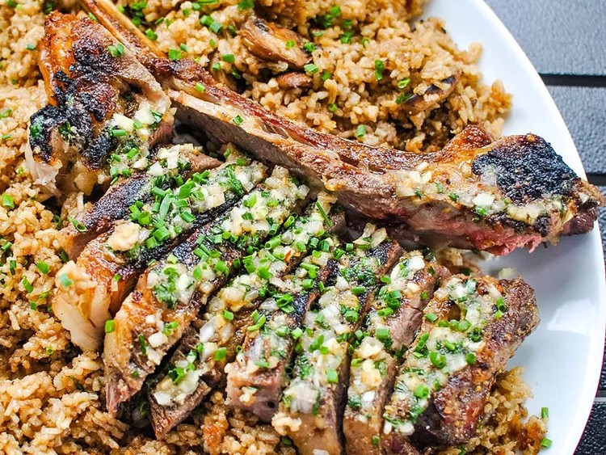

Grilled Tomahawk Steak

This grilled tomahawk steak recipe is a showstopper
I like to use a Bluetooth-enabled meat thermometer to help me achieve the perfect medium-rare internal temperature.
Ingredients
- 1 tablespoon brown sugar
- 1 tablespoon Montreal steak seasoning
For Compound Butter:
- 1/4 cup salted butter, at room temperature
- 1 tablespoon minced shallot
- 1 clove garlic, minced
- 1 tablespoon chopped fresh chives
- 2 teaspoons reserved steak rub
Instructions
- To make steak rub, place brown sugar, Montreal steak seasoning, garlic powder, and onion powder in a small airtight container; shake or stir to combine.
Set aside 2 teaspoons steak rub to use in compound butter
- Place steak on a half sheet pan, and rub steak on top, bottom, and sides with remaining steak rub until well coated.
Place steak, uncovered, in the refrigerator to dry-brine overnight.
- For compound butter, place butter, shallot, garlic, chives, and the reserved 2 teaspoons steak rub in a small bowl. Mash together with a fork until evenly combined.
Spoon butter into a small airtight container, cover, and refrigerate until ready to use.
- Remove steak from the refrigerator 1 hour before cooking to take the chill off.
It will cook on the sheet pan that you used for dry-brining.
- Preheat the oven to 300 degrees F (150 degrees C). The reverse sear method is used to cook this big steak, so you will need an instant-read thermometer. If you are using a digital meat thermometer,
set the internal temperature to 110 degrees F (43 degrees C).